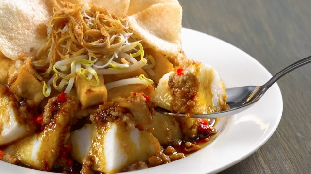

Daftar Resep

Nasi Goreng (High Protein)
Nasi goreng sehat dengan tambahan protein tinggi dari ayam dan telur, cocok untuk menu sarapan bergizi.
Lihat Resep

Ketoprak
Hidangan khas Betawi berisi tahu, bihun, dan tauge disiram saus kacang gurih yang menggugah selera.
Lihat Resep
Pangsit Goreng Ayam
Pangsit renyah berisi ayam cincang berbumbu, cocok sebagai camilan atau lauk pendamping.
Lihat Resep
Donat Kentang
Donat empuk berbahan dasar kentang yang memberikan rasa lembut dan legit di setiap gigitan.
Lihat Resep
Telur Kecap
Telur rebus yang dimasak dengan kecap manis dan bumbu sederhana, cocok untuk makan praktis.
Lihat Resep